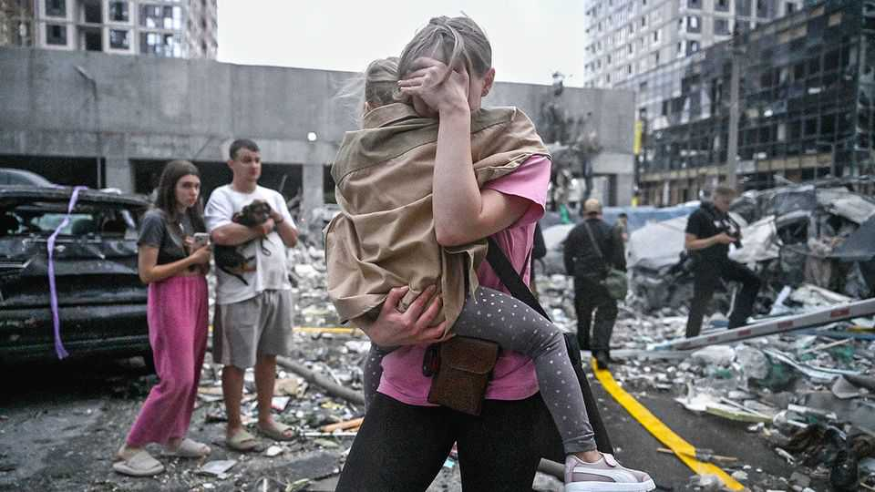
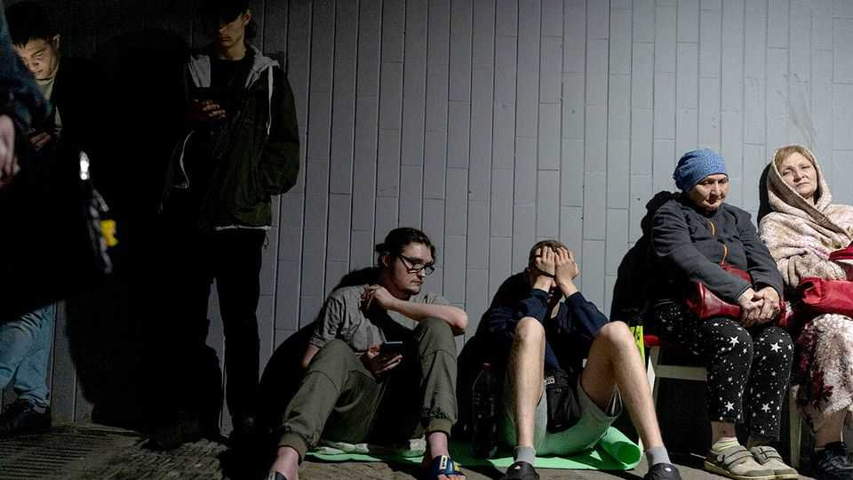
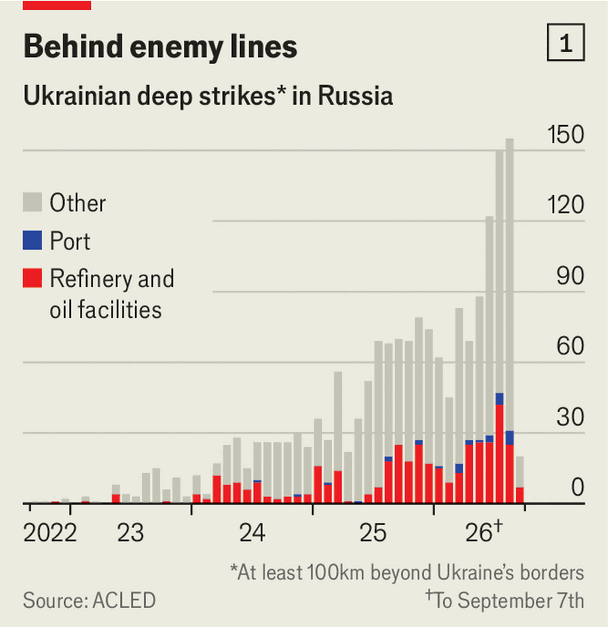
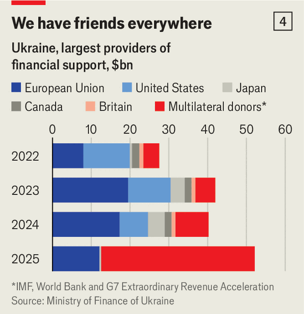

Russia has entered a new phase of total war
Ukrainians are feeling the heat

Sep 17th 2026
LIFE IS NEWLY, intensely, disrupted in Kyiv. Wailing sirens and screeching apps that warn of incoming strikes are common sounds all over. Explosions at petrol and railway stations, shopping malls, offices and apartment blocks are a constant backdrop. Some reports suggest there is a new exodus of families from the capital to safer parts west.
Ukrainians in the capital had grown accustomed, if not entirely inured, to the vicissitudes of life in wartime—air-raid alerts, missiles, blackouts and bouts of freezing cold due to Russian attacks on power plants. But the arrival at scale in late August of jet-powered Shahed drones—and a rise in Russian missile hits—wreaked a new level of fear and devastation. Russia’s ramped-up deep-strike capability, combined with a dearth of Ukrainian interceptors, has once again brought the front line closer to the people of Kyiv.
A team from The Economist saw, during a recent reporting trip in the country, how the new phase of the war has put stress on Ukraine physically, psychologically, economically and politically. Your correspondents also learned just how routine close encounters with strike drones have become; they were near enough to feel a drone explosion in the street of one front-line city. Even before the blasts occur, it is an unnerving experience to stare up at the black, triangular shape of a Shahed drone, as it swoops and whines overhead.
It is unclear what respite Ukrainians can hope for from diplomacy. Early this month Donald Trump’s envoys—Steve Witkoff and Jared Kushner—paid their virgin visit to the Ukrainian capital. That was on the heels of a briefing by Vladimir Putin in Moscow, where the two Americans have become somewhat regular visitors. Sources with knowledge of the pair’s lengthy talks with Volodymyr Zelensky suggest a proposal for a limited technical arrangement could emerge in the next few weeks.
Mr Trump is keen to blame Ukraine’s attacks on Russia (rather than his war in Iran) for high global prices of diesel. A window for discussions may exist after the charade of Duma elections in Russia on September 20th, and ahead of America’s midterms in November. Mr Trump may hope to brag to voters that he has cut a deal focused on the Black Sea, easing the blocked exports of Russian oil and of grain from both Russia and Ukraine. Trilateral talks involving America, Russia and Ukraine may happen in Abu Dhabi in early October.
All that would be welcome—and Ukraine is holding some cards. The European Union is united behind it. There is no prospect of America pushing for an entirely pro-Russian settlement of the sort raised at last year’s summit in Anchorage (“Alaska is dead,” a senior official in Kyiv says with a smile). But it would be fantasy to hope for anything like a wider peace or ceasefire. Mr Putin will not countenance pausing his assault before next spring, at the soonest.
Ukraine will fight on and will continue to inflict enormous pain on Russia. On the front line and in the areas 200km behind it, arguably it has the upper hand. The battle for territory is not static, but it is clearly not progressing to Mr Putin’s liking—a net gain of perhaps 100 square kilometres this year, or just 0.017% of Ukraine’s pre-2014 territory. A Ukrainian source puts confirmed Russian dead at 600,000, and estimates Ukraine is killing 22,000-23,000 Russians each month. Add the seriously wounded, and Russian losses are probably running above the current recruitment rates of 30,000-31,000. (Ukrainian sources also fear that reinforcements from North Korea are on the way.)

The war is not in pure stalemate. The stasis on the map obscures a Darwinian struggle of innovation and adaptation. And in an era of drones and missiles, the balance of fortunes behind the front also matters hugely. Here, in the long-range fight, Ukraine is in trouble. Going into the winter, Russia has the lead in both production and technology of long-range weapons. Where the war was once split between contested battle lines at the front and the weary but mostly safe cities farther back, drone innovations are now blurring the distinction. It is becoming harder to know where the battle area starts and stops.
Take the front itself. It is made up not of consistent trench lines but a contested band of territory 40-80km wide, generally known as the “kill zone”, where all movement is perilous. If soldiers are spotted, the sky above teems night or day with small remotely piloted first-person-view (FPV) hunter drones. A Ukrainian soldier describes how the Russians have swapped armoured vehicles for nippy jeeps with the doors removed, the better to leap out quickly. “Sometimes they walk up to 20km carrying everything on their backs, so if they hear a drone it’s easier to hide.”
But soldiers cannot rely just on their ears for early warnings. “Ambush drones” lie in wait on known routes, sometimes on roofs or behind bushes, rising to strike unexpectedly. Both sides turn to robotic vehicles, trundling to and fro with gear, food and water, or ammunition. Soldiers alongside such a robot mule know drones may swoop to destroy it—and them.
Both sides are operating drones ever farther into the enemy’s rear, trying to starve supply lines. Step down into the well-hidden operations centre of “Nemesis” drone battalion and a hushed, businesslike effort is revealed. Camouflaged material drapes the walls. The unit flag bears the black-and-white logo of a sci-fi alien face. Pilots and navigators sit together like gamers, clad in T-shirts and armed with controllers, hunting for targets well behind the front, in Russian-controlled territory. On screen, a road bridge comes into view, spanning a lush tributary. A Russian lorry already burns there, and the drone settles itself between some trees, waiting for another to pass by.
In these open hunting grounds it can be difficult to spot military traffic, as the Russians use civilian lorries. “We never hit the cabs,” claims Robert “Magyar” Brovdi, the bearded commander of the Unmanned Systems Force, a group of dedicated drone specialists that includes Nemesis. They have been using these tactics to try to isolate Russian-occupied Crimea. Magyar explains the campaign from his basement suite, which features a Metallica pinball machine and a coffee-table copy of “On War” by Carl von Clausewitz. “Crimea is the jewel in Russia’s crown,” he says, describing how Ukraine’s efforts weakened Russia’s forces, especially early on. Since then, the Russians have adapted defensively, patrolling the same beats with mobile anti-drone units, and with a far higher density of communications jammers.
Now the enemy forces are building equivalent offensive operations of their own. Piloted drones at this range most often rely on a satellite-based data connection. For Ukraine, it is Starlink. Troublingly, Russia has developed local jamming techniques and is rushing to establish a copycat constellation called Rassvet. In the meantime Russia is using a “mesh” network of radio relays between drones. They base it around long-range Geran drones, more commonly called the Shahed, after their Iranian-designed parent. These relays can reach only about 200km into Ukrainian air space, but within that range piloted drones can hunt moving targets, not just home in on pre-set co-ordinates.
Trains are a favoured target. Previously attacks focused on stationary trains that were carrying military materiel. Now the Russians are coming after all locomotives, including city commuter services and, recently, a railway station close to the border with Poland. The head of Ukraine railways, Oleksandr Pertsovsky, speaking from his own command centre, says his trains are in essence “swimming with sharks”.

Then there is Russia’s progress with long-range attacks. Ukraine’s deep strikes (see chart 1) against Russian oil refineries and logistics centres belonging to Wildberries, an e-tailer, have impressed some. But Russia is striking inside Ukraine with greater reach and at a vastly greater scale (see map).
Two further dismaying developments are helping Russia along. The first is that old propeller-driven Shaheds are being replaced by ones powered by jet engines, probably imported from China. Ukraine’s ground-based defences—mostly machineguns and shoulder-fired missiles—can barely cope with such swifter, higher-flying assailants. Fighter aircraft, such as Ukraine’s F-16s and MiG-29s, can destroy them, but they lack ammunition or, being older second-hand models, are often abroad for expert maintenance.
That leaves ground-based interceptors, but Ukraine lacks the sort to do the job. Sacrificial quadcopter drones cannot catch the jet-powered Shaheds. Prototypes have been devised to meet the challenge. One test-launch video shows something closer to a missile than a drone. That is a big demand on testing and engine design. It raises unit costs. Even if rushed into service (unlikely before winter), boosting production will take hefty financing and at least six months. By contrast, Russia’s production target for jet Shaheds is reportedly 24,000 for 2026; a Ukrainian source suggests they have used only 1,000 so far.

The second development is Russia speeding up its production of ballistic missiles. By one estimate it can launch over 100 of all types every month. Ukraine has little answer, especially given its very low stocks of American Patriot interceptors.
Ukraine is trying to build a home-grown equivalent to the Patriot, based on a ballistic missile being developed by Fire Point, a local firm. But it is unlikely to produce anything usable for a long time, perhaps several years. This is even trickier than hunting jet Shaheds. Intercepting a ballistic missile requires marrying complex radars, data uplinks and hypersensitive missile guidance. Ukraine’s mil-tech industry is growing in leaps and bounds, but it cannot solve this within months. Nor does Ukraine have the leeway—in particular, access to Starlink inside Russian-held territory—to “strike the archer” (that is, the mobile launchers) rather than the arrow.
So Ukraine’s war prospects are mixed. Soldiers, whether in subterranean command centres near the kill zone or sipping tea in city cafés, say they can hold firm at the front. Under a youthful new commander-in-chief, Mykhailo Drapatyi, “This is no longer a small Soviet army fighting a big Soviet army,” says Oleksiy Honcharuk, a former prime minister who now chairs Nemesis’s expert council. They do not fear another round of Russian troop mobilisation either, as many in Kyiv do. “More Russians to kill,” one coldly concludes. But the same officers are troubled by the wider overall fight across Ukraine.
For four-and-a-half years front-line heroism and air defences had kept Ukraine’s main cities running. A resilient domestic economy had provided the government with tax revenue and given citizens a sense of normality. Russia’s latest phase of total war has ended that.

Ukraine is short of money. Its military materiel bills are rising. Direct Western funds for the armed forces are too little to meet this year’s needs. Russian weapons are tearing through a number of Ukraine’s largest corporate taxpayers. They have shut down massive steel plants in cities like Kryvyi Rih and Zaporizhia; steel output in August was 60% lower than a year ago (see chart 2); this month will be worse. Supermarkets, e-commerce and the postal service have been hit hard, with warehouse capacity in the capital down by as much as 80%. On the road from Kyiv towards the front, this is plain to see. Petrol stations have green barrier nets and sandbag bastions around storage tanks. Warehouses lie agape, blackened by explosions.
Russia is also seeking to choke Ukraine’s ability to move goods and people. Strikes on the railways have destroyed more than 250 locomotives this year alone; that damage has been mitigated by repairs, but the rail network could come under severe strain later this year. Petrol stations are bombed daily, with those that fuel lorries quickly singled out.
Most damaging of all, Russia in effect closed Ukraine’s deep seaports in Odessa in July. That has meant a significant share of this year’s harvest risks going unshipped; last year Ukraine’s agricultural exports accounted for more than 10% of Ukraine’s GDP (see chart 3). With domestic prices depressed and storage likely to fill up by December, some of Ukraine’s biggest agriculture outfits are questioning whether to plant at all next season.
All this is before the winter hits. In some respects, Ukraine is better prepared than it has ever been to cope with the Russian onslaught. Its energy infrastructure, long a favoured target for Russia, has been hardened with Western help. Even so, Russian strikes will occasionally cause huge power cuts, probably more than last year. Several large cities, especially Kyiv, are especially vulnerable since they depend on large central-heating plants that are impossible to protect fully. If, as last year, local power generation is destroyed, Kyiv could become an electrical island, dependent on a handful of fragile choke points. One is the large 750kv substation in Makariv, west of the city. With that node working, Kyiv would get roughly 16 hours of daily electricity; without it, perhaps only four.

Last winter, whole districts survived weeks in freezing temperatures after Russia destroyed nearby heating plants. This year, the fear is also that food, water and especially sewerage will be messed up. “This city can collapse,” says a Western diplomat. A Ukrainian official expects “absolute hell” by October. “They will torment Kyiv,” he says. Russian propaganda campaigns will seek to divide and enrage the people. “They will use fatigue, exhaustion and other factors to try to create a tragedy.”
The unease is palpable. Since the appearance of jet drones in the city on August 27th, daily life has been interrupted. Businesses are closing several times a day during air-raid alerts. Commuters are stranded when the metro and buses stop. Schools are sending kids home or moving classes underground; others are considering closing for the winter. Parents debate the possibility of sending children to western parts of the country—or even abroad. Every family that leaves reduces the tax base and labour force, already depleted by roughly a million people serving and a similar number hiding to avoid the draft.
It is not all bad news. The increasingly home-made weaponry is giving the economy a leg up. Almost half of Ukraine’s top-20 taxpayers are military-technology firms. These firms are also decentralised and harder to hit. In time, they may become the new export champions.
But the wartime economy is starting to show signs of stress. Falling export earnings will put pressure on the hryvnia, which could force the central bank to burn through some of its reserves, currently at just under $50bn, to stabilise the currency—or raise interest rates.
On September 12th Serhiy Koretskiy, the new prime minister, estimated that just the first few weeks of the Russian surge would deprive the government of 70bn hryvnia ($1.6bn) in tax revenue. That comes on top of higher military spending. In August Mr Zelensky surprised European backers by asking for help to fill a $27bn hole in the military budget. Analysts at Dragon Capital, an investment firm, have raised their overall deficit forecast for this year by $4bn-9bn. Next year looks no better. The finance minister, Sergii Marchenko, says Ukraine in 2027 Ukraine will need $32.6bn in foreign finance more than what has already been promised.

Western, mostly European, partners have been helping (see chart 4). Over this year and next, the EU is lending Ukraine €90bn ($104bn) to fund the budget deficit and weapons purchases. Some of the funds are stuck because Ukraine’s parliament has yet to pass reforms that donors have demanded in return. That puts the process at the mercy of Ukraine’s increasingly waspish politics.
The president’s ability to push through the legislation may depend on whether David Arakhamia, his wheeler-dealer faction chief and peace negotiator, can retain influence over the MPs. But some speculate that Mr Arakhamia may himself be in the sights of Ukraine’s increasingly assertive anti-corruption bodies.
One official believes the “moral heat” of a difficult winter will concentrate minds. “What choice do we have?” The focus on survival has certainly helped Ukraine defy the odds before. As Russia reverts to an even dirtier way of waging war, Ukraine will need money to defy the odds once more. More than anything they will need grit—just as they always have. ■